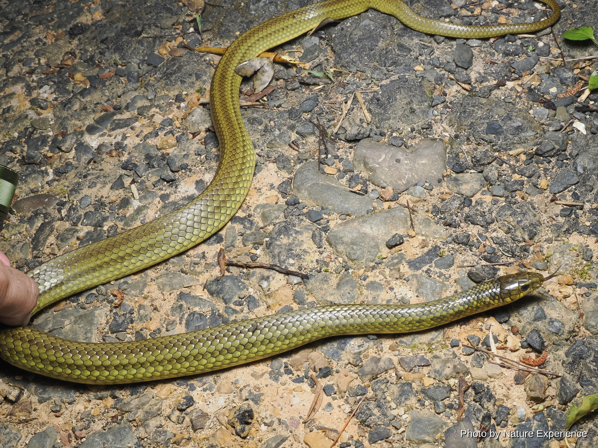

アカマタ
全長〜200cm。5月から11月頃に良く観察できる。黄褐色の体に赤と黒の楕円形の横じまが入る。毒は無いが攻撃的でテリトリーに入れば威嚇して攻撃してくる。食性は哺乳類、鳥類、。

CREATURES / HEBI
奄美大島の夜の森で出会うヘビたち。毒を持つもの、持たないもの、森や水辺を好むものなど、それぞれ異なる環境で暮らしています。
ABOUT
奄美大島には、ハブをはじめとするさまざまなヘビが暮らしています。夜行性の種類が多く、日が暮れて森が静かになると、少しずつ活動を始めます。
同じヘビの仲間でも、暮らしている場所や活動する時間、食べるものなどはそれぞれ異なります。森の中だけでなく、水辺や草むらなどで見つかる種類もいます。
奄美の夜の森を歩いていると、そんなヘビたちの姿に出会うことがあります。見つけたときには、まず距離をとって、その姿や動きを静かに観察してみてください。
奄美大島では、ハブやヒメハブなどの毒蛇に出会う可能性があります。夜間の森では足元や草むらに注意し、ヘビを見つけても決して近づいたり、触ったりしないでください。
SNAKES OF AMAMI
奄美大島で確認されているヘビの中から、夜の森で出会うことのある種類を紹介します。写真や名前をクリックすると、それぞれの詳しいページを見ることができます。
全長〜200cm。5月から11月頃に良く観察できる。黄褐色の体に赤と黒の楕円形の横じまが入る。毒は無いが攻撃的でテリトリーに入れば威嚇して攻撃してくる。食性は哺乳類、鳥類、。
全長〜110cm。5月から11月頃に良く観察できる。体型は細長く体色は黒や黒褐色で、胴に黄色や褐色の帯模様が入る。水辺を好み水田や小型のカエルが多い場所で良く見られる。毒は。

全長〜226cm、大型のヘビ。5月から11月頃が良く観察できる(冬でも暖かい日には活動)。夜行性で昼間は穴の中などで休む。平地から山地の森林、草原、水辺、農地や樹上にも生息。

全長〜80cm。寒さに強く奄美大島では年中観察できる。梅雨を過ぎて暑くなると標高の高い場所でよく観察できる。食性は小型から中型のカエル、小型哺乳類、鳥類。水田や流れの緩やか。

全長〜50cm。5月頃と9月頃に良く観察できる。背面は赤褐色や橙色で5本の暗褐色の縦縞が入る。「特定動物」に指定され、人に危害を与える可能性のある動物とされる。毒性は神経毒。

全長〜100cm。5月から11月頃によく観察できる。昼行性だが夜間活動する個体も多い。頭部は小さく食性は主にミミズ、カエルも食べる。奄美大島では1番個体数が多く、昼間の林内。

全長〜55cm。背面は黒褐色や暗褐色で正中線に沿って黒い縦縞が入る。腹面は黄色。奄美ではよっぽど条件の良い日にしか出会えない幻のヘビ。大雨の日に地表に出てくることがある。夜。

EXPLORE MORE
カテゴリーを選んで、奄美大島の生き物をもっと見てみましょう。
NIGHT FIELD TOUR
ガイドと一緒に、生き物を探しながら夜の森を観察できます。
ナイトツアーの内容や料金はこちら →